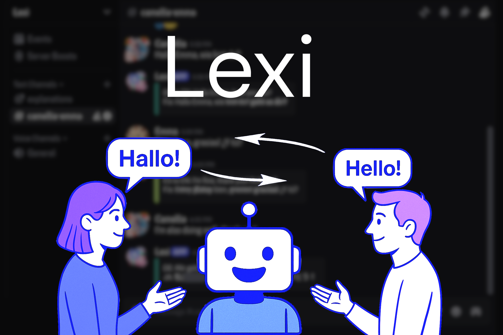
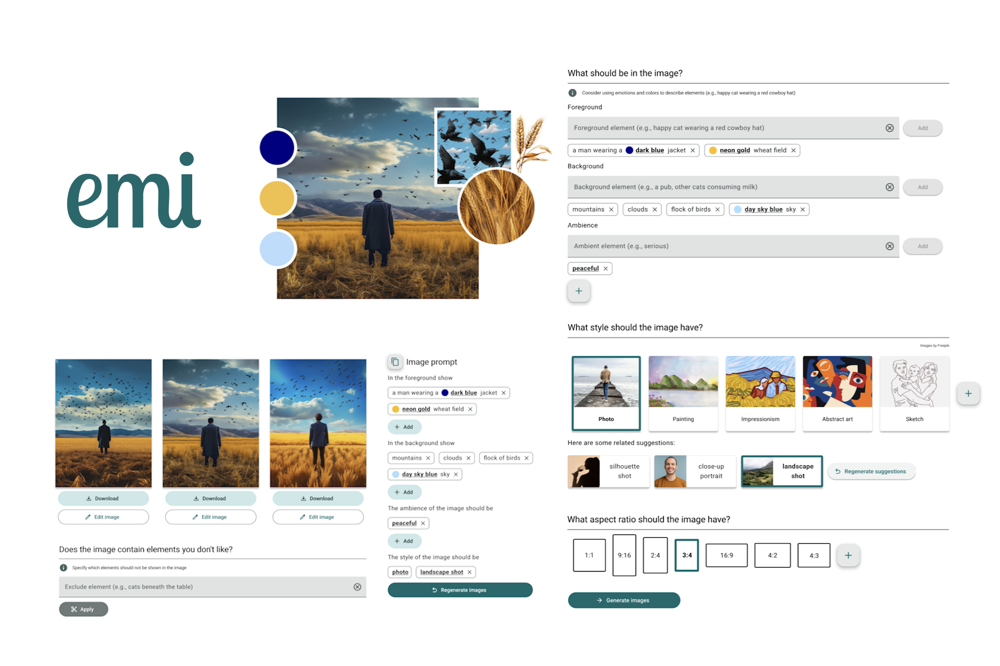

AI-Powered User Interface: Designing for Responsible AI and Critical Engagement
Researched, designed, and evaluated an AI interface at a leading European research institute to examine critical engagement with AI.
I’m a UX designer and researcher who combines empathy with strategy to shape technology into a reliable ally. With degrees in computer science and human–computer interaction (completion Oct 2025), I pair human warmth with analytical rigor to transform research into designs that are both intuitive for people and aligned with real-world constraints.
Researched, designed, and evaluated an AI interface at a leading European research institute to examine critical engagement with AI.

Independently designed, coded, and evaluated an AI assistant that delivers real-time language feedback to accelerate learning in social settings.

Collaborated with the Ludwig Boltzmann Institute to co-design a mobile app and physical flower that visualize team step progress in office environments.

Designed user interface components to guide users in crafting effective prompts for generating emotionally resonant AI images.

Prototyped a playful, educational system to support menstrual activists in making period education more interactive and accessible.

Designed in a 24-hour hackathon: a product-strategy-driven AR game concept to drive engagement and spending at Austrian Christmas markets.
Inspired by the wisdom of Lao Tzu, I try to let love guide the way I move through the world—by listening deeply, supporting others with care, and allowing design to become a gentle way of bringing more harmony into everyday life.
When I'm not immersed in design and technology, you'll find me exploring new places, strength training, singing, and nurturing my appreciation for reality through meditation, photography, and books. Psychology and philosophy are my favorite genres, and to deepen my empathy across cultures, I explore them in multiple foreign languages like Japanese, Russian, German, Italian, and Spanish. To support this journey, I created Lexi—an AI-powered assistant that helps others and me practice writing more confidently in foreign languages by providing real-time feedback and support within meaningful conversations.